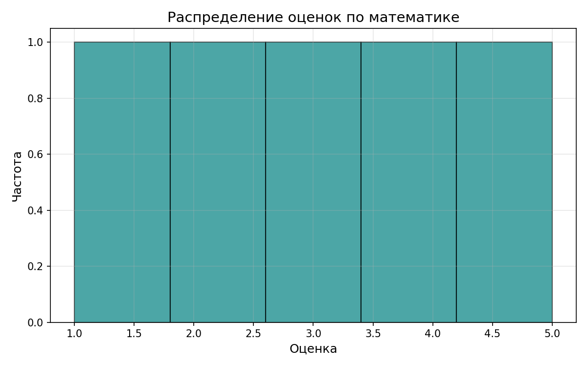
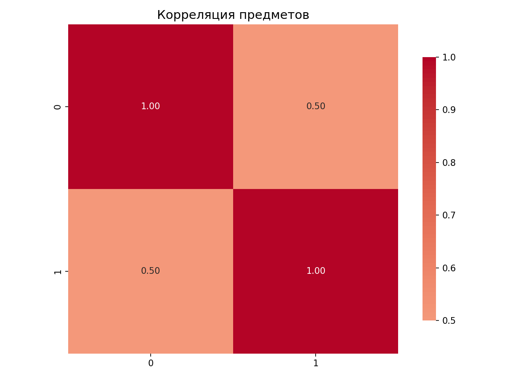
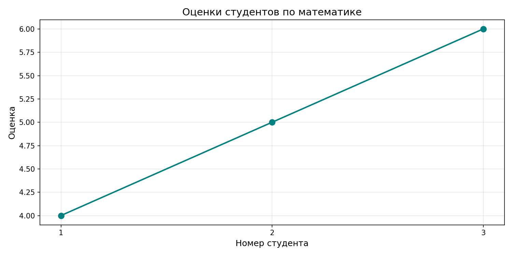

Лабораторная работа №2
Численные вычисления и анализ данных с использованием NumPy
Тема:Основы NumPy: массивы и векторные операции
Цель:
Освоить базовые операции с массивами NumPy, научиться выполнять векторные и матричные вычисления, проводить статистический анализ данных и визуализировать результаты.
Задание:
Реализовать все функции в файле main.py, чтобы проходили тесты:
- Создание и обработка массивов
create_vector()— создать массив от 0 до 9create_matrix()— создать матрицу 5x5 со случайными числамиreshape_vector()— преобразовать (10,) → (2,5)-
transpose_matrix()— транспонирование матрицы -
Векторные операции
vector_add()— сложение векторовscalar_multiply()— умножение вектора на числоelementwise_multiply()— поэлементное умножение-
dot_product()— скалярное произведение -
Матричные операции
matrix_multiply()— умножение матрицmatrix_determinant()— определитель матрицыmatrix_inverse()— обратная матрица-
solve_linear_system()— решение системы Ax = b -
Статистический анализ
load_dataset()— загрузка CSV в NumPy массивstatistical_analysis()— среднее, медиана, std, min, max, перцентили-
normalize_data()— Min-Max нормализация -
Визуализация
plot_histogram()— гистограмма распределения оценокplot_heatmap()— тепловая карта корреляцииplot_line()— график зависимости оценок студентов
Код:
import numpy as np
import pandas as pd
import matplotlib.pyplot as plt
import seaborn as sns
#============================================================
# 1. СОЗДАНИЕ И ОБРАБОТКА МАССИВОВ
#============================================================
def create_vector():
"""
Создать массив от 0 до 9.
Returns:
numpy.ndarray: Массив чисел от 0 до 9 включительно
"""
return np.arange(10)
def create_matrix():
"""
Создать матрицу 5x5 со случайными числами в диапазоне [0, 1].
Returns:
numpy.ndarray: Матрица 5x5 со случайными значениями от 0 до 1
"""
return np.random.rand(5, 5)
def reshape_vector(vec):
"""
Преобразовать вектор из формы (10,) в матрицу формы (2, 5).
Args:
vec (numpy.ndarray): Входной массив формы (10,)
Returns:
numpy.ndarray: Преобразованный массив формы (2, 5)
"""
return vec.reshape(2, 5) # .reshape() - метод, изменяющий форму массива без изменения данных
def transpose_matrix(mat):
"""
Транспонирование матрицы.
Args:
mat (numpy.ndarray): Входная матрица формы (m, n)
Returns:
numpy.ndarray: Транспонированная матрица формы (n, m)
"""
return mat.T
# ============================================================
# 2. ВЕКТОРНЫЕ ОПЕРАЦИИ
# ============================================================
def vector_add(a, b):
"""
Сложение векторов одинаковой длины (поэлементно).
Args:
a (numpy.ndarray): Первый вектор
b (numpy.ndarray): Второй вектор
Returns:
numpy.ndarray: Результат поэлементного сложения
"""
return a +b
def scalar_multiply(vec, scalar):
"""
Умножение вектора на число.
Args:
vec (numpy.ndarray): Входной вектор
scalar (float/int): Число для умножения
Returns:
numpy.ndarray: Результат умножения вектора на скаляр
"""
return vec * scalar
def elementwise_multiply(a, b):
"""
Поэлементное умножение (произведение Адамара).
Args:
a (numpy.ndarray): Первый вектор/матрица
b (numpy.ndarray): Второй вектор/матрица
Returns:
numpy.ndarray: Результат поэлементного умножения
"""
return a * b
def dot_product(a, b):
"""
Скалярное произведение векторов.
Args:
a (numpy.ndarray): Первый вектор
b (numpy.ndarray): Второй вектор
Returns:
float: Скалярное произведение векторов
"""
return np.dot(a, b)
# ============================================================
# 3. МАТРИЧНЫЕ ОПЕРАЦИИ
# ============================================================
def matrix_multiply(a, b):
"""
Умножение матриц.
Args:
a (numpy.ndarray): Первая матрица формы (m, n)
b (numpy.ndarray): Вторая матрица формы (n, p)
Returns:
numpy.ndarray: Результат умножения матриц формы (m, p)
"""
return a @ b
def matrix_determinant(a):
"""
Вычисление определителя квадратной матрицы.
Args:
a (numpy.ndarray): Квадратная матрица
Returns:
float: Определитель матрицы
"""
return np.linalg.det(a) #.linalg - подмодуль линейной алгебры
def matrix_inverse(a):
"""
Вычисление обратной матрицы.
Args:
a (numpy.ndarray): Квадратная матрица
Returns:
numpy.ndarray: Обратная матрица
"""
return np.linalg.inv(a)
def solve_linear_system(a, b):
"""
Решение системы линейных уравнений Ax = b.
Args:
a (numpy.ndarray): Матрица коэффициентов A
b (numpy.ndarray): Вектор свободных членов b
Returns:
numpy.ndarray: Решение системы x
"""
return np.linalg.solve(a, b) # 1. Разлагает матрицу A = L × U (L - нижняя, U - верхняя треугольные)
# 2. Решает L × y = b (прямая подстановка)
# 3. Решает U × x = y (обратная подстановка)
# ============================================================
# 4. СТАТИСТИЧЕСКИЙ АНАЛИЗ
# ============================================================
def load_dataset(path="data/students_scores.csv"):
"""
Загрузить CSV файл и вернуть NumPy массив.
Args:
path (str): Путь к CSV файлу. По умолчанию "data/students_scores.csv"
Returns:
numpy.ndarray: Загруженные данные в виде массива
"""
return pd.read_csv(path).to_numpy()
def statistical_analysis(data):
"""
Выполнить статистический анализ одномерных данных.
Args:
data (numpy.ndarray): Одномерный массив данных
Returns:
dict: Словарь со статистическими показателями:
- mean (float): среднее арифметическое
- median (float): медиана
- std (float): стандартное отклонение ( Шаг 1: Разности с средним, Шаг 2: Квадраты разностей,Шаг 3: Среднее квадратов,Шаг 4: Корень из дисперсии)
- min (float): минимальное значение
- max (float): максимальное значение
- percentile_25 (float): 25-й перцентиль (Сортируем, 25% от 10 элементов = 2.5, интерполяция между 2-м и 3-м)
- percentile_75 (float): 75-й перцентиль
"""
return {
"mean": np.mean(data),
"median": np.median(data),
"std": np.std(data),
"min": np.min(data),
"max": np.max(data),
"percentile_25": np.percentile(data, 25),
"percentile_75": np.percentile(data, 75)
}
def normalize_data(data):
"""
Выполнить Min-Max нормализацию данных.
Формула: (x - min) / (max - min)
Args:
data (numpy.ndarray): Входной массив данных
Returns:
numpy.ndarray: Нормализованный массив данных в диапазоне [0, 1]
"""
min_val = np.min(data)
max_val = np.max(data)
return (data - min_val) / (max_val - min_val)
# ============================================================
# 5. ВИЗУАЛИЗАЦИЯ
# ============================================================
def plot_histogram(data, save_path="plots/histogram.png"):
"""
Построить гистограмму распределения данных.
Args:
data (numpy.ndarray): Данные для гистограммы
save_path (str): Путь для сохранения графика
Returns:
str: Путь к сохранённому файлу
"""
plt.figure(figsize=(8, 5)) # создаёт новое окно для графика
plt.hist(data, bins=5, edgecolor='black', color='teal', alpha=0.7) # bins=5 - количество столбцов (интервалов) на гистограмме, alpha=0.7 - прозрачность
plt.title('Распределение оценок по математике', fontsize=14)
plt.xlabel('Оценка', fontsize=12) #.xlabel() - метод для установки подписи оси X
plt.ylabel('Частота', fontsize=12)
plt.grid(True, alpha=0.3) #plt.grid() - метод для отображения сетки на графике (True - включает сетку)
plt.tight_layout() #.tight_layout() - метод автоматической настройки отступов и расположения элементов
plt.savefig(save_path, dpi=150) # cохраняет текущий график (фигуру) в файл с указанными параметрами
plt.close()
return save_path
def plot_heatmap(matrix, save_path="plots/heatmap.png"):
"""
Построить тепловую карту корреляции.
Args:
matrix (numpy.ndarray): Матрица корреляции
save_path (str): Путь для сохранения графика
Returns:
str: Путь к сохранённому файлу
"""
plt.figure(figsize=(8, 6))
sns.heatmap(
matrix, # данные для отображения
annot=True, # показывать числовые значения внутри ячеек
cmap='coolwarm', # цветовая схема
center=0, # центр цветовой шкалы в 0
fmt='.2f', # формат чисел: 2 знака после запятой
square=True, # ячейки квадратные
cbar_kws={'shrink': 0.8} # уменьшить цветовую шкалу до 80% от высоты графика
)
plt.title('Корреляция предметов', fontsize=14)
plt.tight_layout() # автоматически подгоняет элементы, чтобы ничего не обрезалось
plt.savefig(save_path, dpi=150)
plt.close()
return save_path
def plot_line(x, y, save_path="plots/line_plot.png"):
"""
Построить линейный график зависимости.
Args:
x (numpy.ndarray): Значения по оси X (номера студентов)
y (numpy.ndarray): Значения по оси Y (оценки)
save_path (str): Путь для сохранения графика
Returns:
str: Путь к сохранённому файлу
"""
plt.figure(figsize=(10, 5))
plt.plot(x, y, marker='o', linestyle='-', linewidth=2, markersize=8, color='teal') # маркер в виде кружка на каждой точке
plt.title('Оценки студентов по математике', fontsize=14)
plt.xlabel('Номер студента', fontsize=12)
plt.ylabel('Оценка', fontsize=12)
plt.grid(True, alpha=0.3) # Включить сетку с прозрачностью 30%
plt.xticks(x)
plt.tight_layout() # чтобы заголовок/подписи не обрезались
plt.savefig(save_path, dpi=150)
plt.close()
return save_path
Гистограмма распределения оценок:

Тепловая карта корреляции:

Линейный график успеваемости:

Вывод:
Лабораторная работа выполнена. В ходе выполнения лабораторной работы были освоены базовые операции с массивами NumPy, выполнены векторные и матричные вычисления, проведён статистический анализ данных и построены графики.